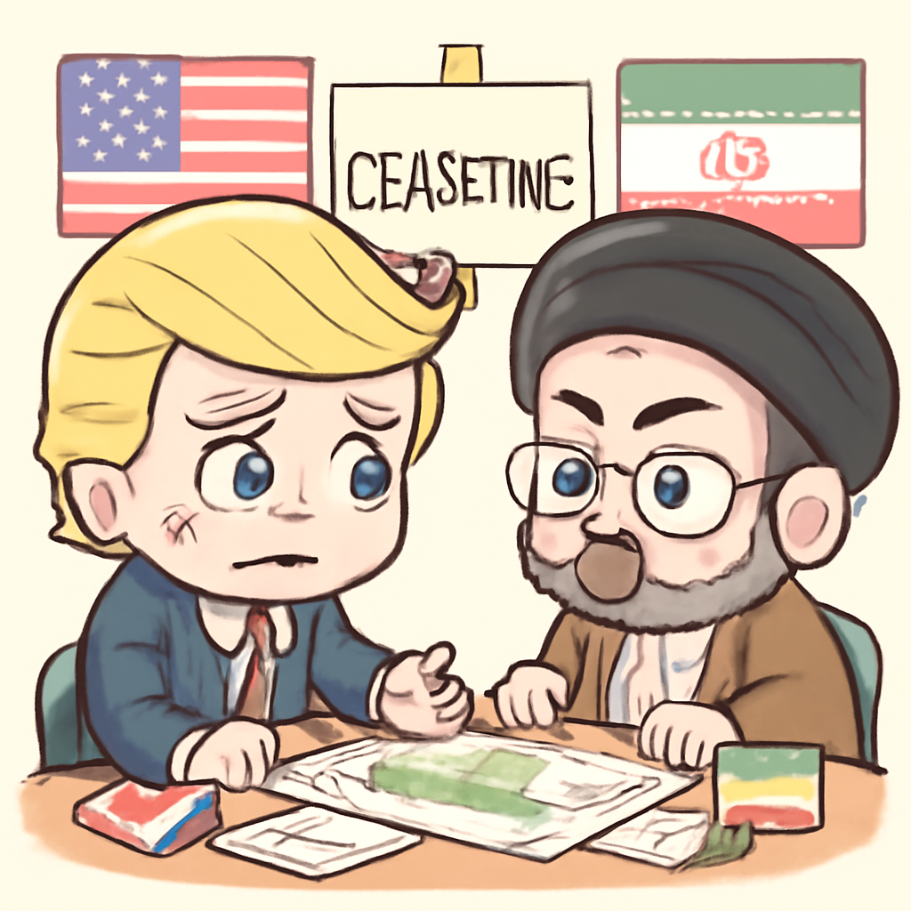
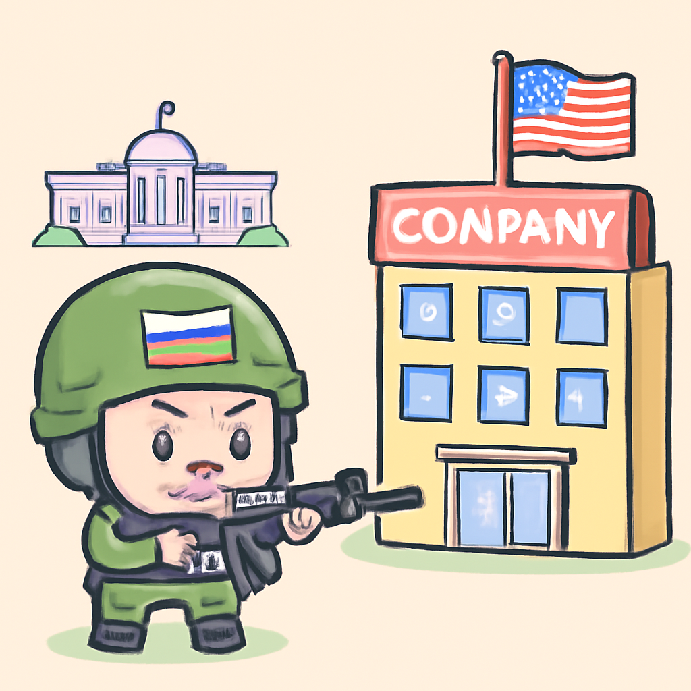

其一 · 伊朗 · 特朗普稱伊朗停火處於「大規模生命支持」
特朗普批評伊朗的停火提議極其薄弱。

在伊朗，特朗普表示目前的停火協議面臨重大挑戰，批評其內容「極其薄弱」。這一言論引發了對即將可能發生的衝突升級的擔憂，因為地區局勢緊張。看來，停火的生命力比預期中還要脆弱。
🔗 原始新聞 ↗
2026-05-13 · 以古觀今，以笑抗愁
特朗普批評伊朗的停火提議極其薄弱。

在伊朗，特朗普表示目前的停火協議面臨重大挑戰，批評其內容「極其薄弱」。這一言論引發了對即將可能發生的衝突升級的擔憂，因為地區局勢緊張。看來，停火的生命力比預期中還要脆弱。
🔗 原始新聞 ↗
俄國對美國企業的攻擊持續，白宮默默無言。

在烏克蘭的俄羅斯，針對可口可樂和其他美國企業的攻擊事件持續發生，卻未見白宮作出明確回應。這讓人擔心美國的安全策略是否需要重新評估，畢竟，面對攻擊時沉默可不是解決問題的好方法。
🔗 原始新聞 ↗
烏克蘭前高官因貪污問題面臨法律挑戰。
在基輔，烏克蘭前總統辦公室主任安德烈·葉爾馬克因涉嫌洗錢被調查，這讓整個貪腐風波再度升級。這不僅影響政府信譽，也可能改變烏克蘭未來的政治局勢。看來，清理貪腐的路還是很漫長。
🔗 原始新聞 ↗
因伊朗戰爭影響，美國通脹率飆升。
在華盛頓，美國最新的通脹數據顯示，因為能源成本上漲，通脹率上升至3.8%。這對消費者來說可不是好消息，大家可能得再想想要不要點外賣了。看來，油價漲真的會影響到我們的肚子。
🔗 原始新聞 ↗
馬克宏在肯尼亞尋求與非洲國家的新夥伴關係。
在肯尼亞，法國總統馬克宏進行訪問，旨在加強與英語非洲國家的聯繫。這次會議不僅是經濟合作的機會，還是文化交流的橋樑。馬克宏的非洲之旅或許能為法國帶來新的合作機會。
🔗 原始新聞 ↗